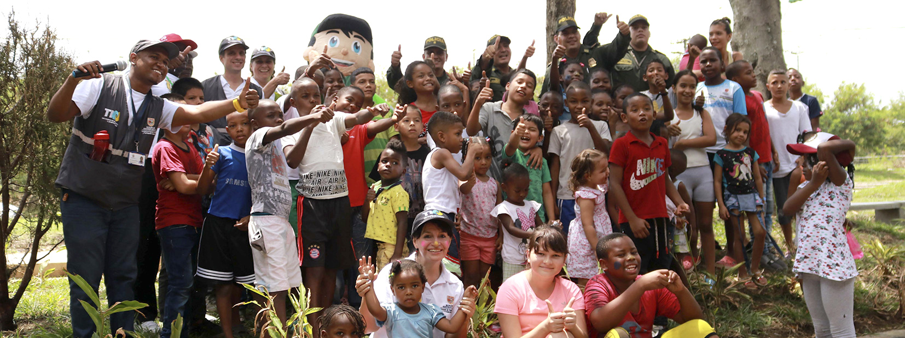
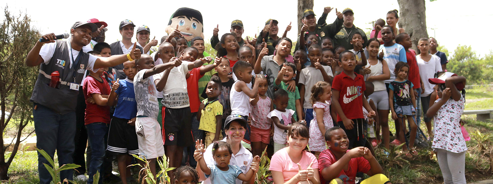

Observatorio de seguridad
El Observatorio de Seguridad es un grupo de investigación adscrito a la Secretaría de Seguridad y Justicia de la alcaldía de Santiago de Cali. Nace en 1993 como estrategía de medición y prevención de la violencia, siendo pionero en Latinoamérica y motivando su replicación en distintas ciudades de Suramérica.
El Observatorio de Seguridad pone a disposición de la ciudadanía datos, informes y mapas que podrán ser descargados en esta página web.